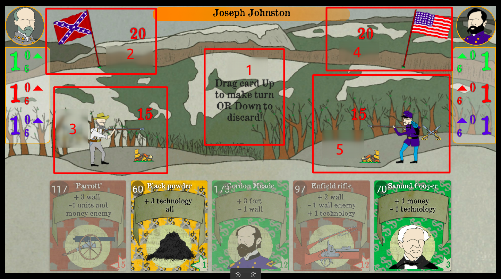
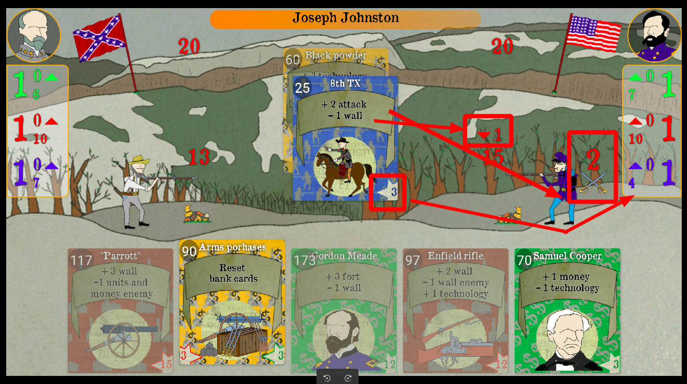
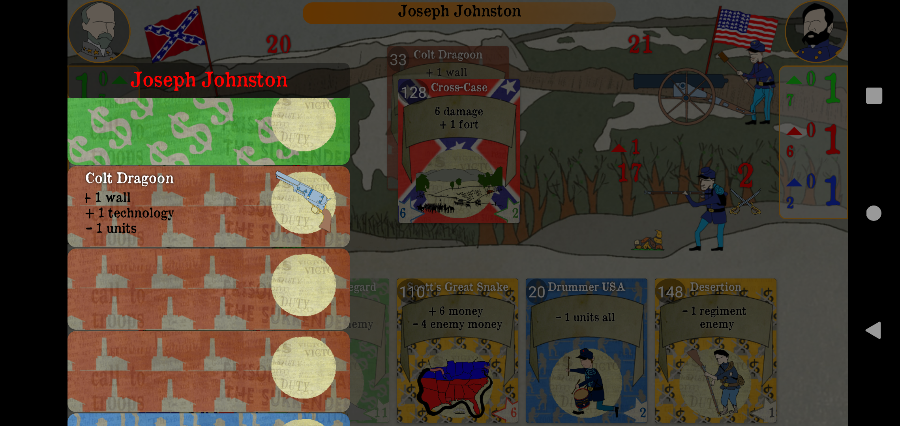
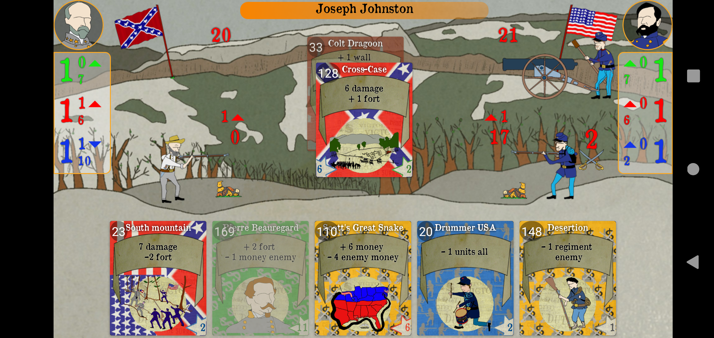

The screen shows the playing field. The left and bottom are the user interaction areas. The right side is the enemy's area.

Shows how much each resource will be added in one move to you or your opponent.

Shows how many resources you or your opponent have on the given move.

Shows how many additional resources of any of the groups will be added to you or your opponent per turn.

At the bottom is the player's card block. At the bottom of the map on the left and right in the corner is the cost of the map in resources, color indicates what kind of resource is required Maps of group 1 are darkened and they cannot be walked because there is not enough for their resources, they can only be pulled down and dropped. The cards group 2 are bright and can be walked by pulling them up.
We look like a yellow card number 60, it adds + 3 technologies to everyone (Red-brown group) in total after the turn this map, the user and the opponent will add these resources to the area on the screen below
We make a move, and the opponent at the same time makes a move with the card of the blue group number 25

As a result, the player and the opponent have got +3 technologies +1 per turn, in total it has become 10.
At the same time, the opponent spent 3 resources of the blue group and now has only 4. At the same time, the card has decreased the value shaft growth every turn, now the arrow points down and has a value of 1, which means the shaft does not grow every turn and remains unchanged. The card also increased the value of the attack on the rampart and the enemy fort, displayed behind the fort rival and equal to 2. Means that each move the opponent will subtract 2 from the user's shaft, pay attention that the user's shaft has become equal to 13. And when the shaft becomes 0 it will already decrease the user's fort.

The map was also added to the menu
We are going to be like card number 90 of the yellow group, it must discard all the cards of the green group from the player.

As you can see, all the cards of the green group have been removed from the player. At the same time, the opponent used the card to discard all the cards of the brown group from the opponent (that is, from the player) and additionally threw off the cards of the korchin group. As a result, the mailbox player has a completely renewed deck.
The player is going to play like a red-brown card of group number 33. It adds +1 shaft to the player, +1 technology per turn and -1 unit.
Map 33 has been added to the player menu
As a result, the player resembled card 33 and the opponent with attack card 128. The player in the area of the shaft began to point up and 1 appeared, which would increase the shaft each turn by 1. In the area of blue resources, the arrow points down and displays 1, which means that units (resources of the blue group) are not added every turn.
The opponent inflicted a level of 6 units to the user's shaft, he already inflicts + 2 damage per turn; in total, the user's shaft became equal to -1, but increased by +1 per turn and became equal to 0. For himself, he increased the shaft by +1.